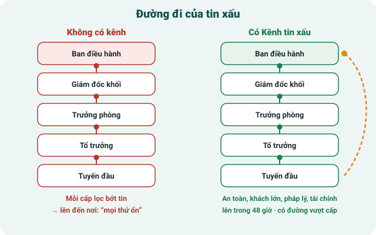

K1 · Lắng nghe và hiểu đúng › Bậc 5 Dẫn dắt
Nghe tín hiệu yếu và giúp tin xấu đi lên
Bài này làm Tờ 6: Kênh tin xấu. Mẫu in. Cách hỏi trong buổi 1-1 đã học ở Lắng nghe để coaching (N5). Kênh khiếu nại chính thức của người lao động sẽ được bàn ở trachnhiemxahoi.com (sắp ra mắt).
1. Mục tiêu
- Phản ứng với tin xấu theo 3 bước: cảm ơn, hỏi sự kiện, hỏi cần gì.
- Lập Kênh tin xấu: loại tin phải lên ban điều hành trong 48 giờ, qua ai, ai được báo vượt cấp.
2. Khởi động truy xuất
- Bốn vai trong một quyết định là gì?
- Ba dấu hiệu cơ cấu đang gây nghẽn là gì?
Đáp án
- Đề xuất, được hỏi ý kiến, quyết, được báo.
- Chờ lâu; nhiều người cùng quyết; hay dồn lên trên.
Xem lại: Quyền quyết định.
3. Giải thích
Càng lên cao, bạn càng ít nghe tin xấu. Không phải vì ít chuyện xấu. Mỗi cấp lọc bớt tin, vì sợ bị trách hoặc muốn tự xử lý trước.
Tín hiệu yếu là dấu hiệu nhỏ, sớm, chưa rõ ràng. Ví dụ: một khách lớn chậm trả lời email, hai người giỏi cùng xin nghỉ ở một bộ phận. Bỏ qua tín hiệu yếu thì sau này phải xử lý khủng hoảng.
Tâm lý an toàn. Edmondson (1999) nghiên cứu 51 nhóm trong một công ty sản xuất. Nhóm có tâm lý an toàn cao thì hay hỏi, báo lỗi, xin phản hồi hơn. Những hành vi học tập này gắn với kết quả làm việc tốt hơn. Tâm lý an toàn nghĩa là tin rằng nói thật sẽ không bị phạt hay bẽ mặt.
Ở cấp tổ chức, phản ứng của lãnh đạo khi nghe tin xấu quyết định lần sau có ai báo nữa không.
Ba bước khi nghe tin xấu
- Cảm ơn người báoTrước mọi câu hỏi. Họ vừa làm điều khó.
- Hỏi sự kiệnChuyện gì, khi nào, ảnh hưởng đến ai. Chưa hỏi lỗi của ai.
- Hỏi cần gìAnh chị cần tôi quyết hoặc hỗ trợ điều gì?
Tìm nguyên nhân và trách nhiệm vẫn cần làm. Nhưng làm sau, theo quy trình, không phải trong phút đầu nghe tin.

Kênh tin xấu. Ghi rõ ba điều. Một: loại tin phải lên ban điều hành trong 48 giờ, như an toàn, khách lớn, pháp lý, tài chính. Hai: tin đi qua ai. Ba: khi nào được báo vượt cấp, ví dụ khi người báo lo bị trả đũa.
Tự đi nghe. Định kỳ gặp tuyến đầu, không có quản lý trực tiếp ngồi cùng. Hỏi: "Điều gì làm việc của anh chị khó hơn mức cần?" Ghi lại, và báo lại đã làm gì với điều nghe được.
4. Ví dụ tại nơi làm việc Việt Nam
Tình huống giả định. Một công ty xây dựng ở Hà Nội có 12 công trường. Tổng giám đốc, chị Mai, thấy báo cáo tuần luôn ghi "an toàn, đúng tiến độ".
Chị đi một công trường, không báo trước. Một tổ trưởng kể: giàn giáo ở tầng 9 đã báo hỏng 3 tuần, chưa ai sửa. Anh ngại báo lên vì lần trước bị trách "sao để xảy ra".
Chị cảm ơn anh trước. Chị hỏi chuyện gì, từ khi nào, ai đang làm ở đó. Rồi chị hỏi anh cần gì. Anh cần dừng tầng 9 và có vật tư thay thế. Chị quyết ngay.
Tuần sau, chị lập Tờ 6. Tin phải lên trong 48 giờ: sự cố an toàn, kể cả suýt xảy ra; chậm trên 2 tuần; tranh chấp với chủ đầu tư. Qua: chỉ huy trưởng gửi giám đốc thi công. Vượt cấp: gửi thẳng trưởng ban an toàn nếu sau 24 giờ chưa được xử lý.
Chị cũng nói rõ với các chỉ huy trưởng: báo sớm sẽ không bị trách, giấu tin mới bị xem xét.
Vì sao cách này tốt: phản ứng đầu tiên khiến người báo thấy an toàn. Kênh rõ nên tin không phụ thuộc vào lòng can đảm của từng người.
5. Thực hành
Tình huống giả định. Bạn là giám đốc khối bán lẻ của một chuỗi điện máy. Một quản lý cửa hàng gọi: "Em xin lỗi, hôm qua cửa hàng bán nhầm giá, lỗ khoảng 40 triệu."
Viết 3 câu bạn sẽ nói theo 3 bước. Ghi 3 loại tin nên có trong Kênh tin xấu của khối bán lẻ.
Gợi ý 1
Câu đầu tiên không nên là "Sao lại để xảy ra?".
Gợi ý 2
Nghĩ về loại tin mà nếu biết muộn, cả chuỗi sẽ chịu thiệt: tiền, khách, an toàn, pháp lý.
Lời giải mẫu
- "Cảm ơn em đã báo ngay."
- "Nhầm ở mã hàng nào, từ lúc nào? Bao nhiêu đơn đã bán?"
- "Em cần anh hỗ trợ gì để chặn tiếp và xử lý với khách?"
Kênh tin xấu: sai giá hoặc mất tiền trên một mức chuỗi tự đặt; khiếu nại của khách có nguy cơ lên mạng xã hội; sự cố an toàn điện hoặc cháy nổ.
(Thông tin là giả định.)
6. Tự kiểm tra
Chọn đáp án. Mỗi lựa chọn đều có giải thích.
Câu 1. Trưởng phòng báo: một lô hàng xuất đã bị khách trả về. Câu đầu tiên tốt nhất là gì?
-
Chưa đúng. Hỏi lỗi ngay khiến người báo phòng thủ. Lần sau họ có thể chậm báo hơn.
-
Đúng. Đúng. Cảm ơn trước, rồi hỏi sự kiện. Trách nhiệm xem xét sau, theo quy trình.
-
Chưa đúng. Câu này không cảm ơn, không hỏi thêm. Người báo không biết bạn sẽ làm gì.
Câu 2. Báo cáo tuần của mọi chi nhánh đều ghi "ổn" suốt 6 tháng. Nên hiểu thế nào?
-
Chưa đúng. Có thể đúng, nhưng 6 tháng không có vấn đề nào là bất thường. Tin có thể đang bị lọc.
-
Đúng. Đúng. Ở cấp cao, tin đến tay thường đã qua nhiều lớp lọc.
-
Chưa đúng. Phạt khi chưa có bằng chứng làm người ta càng ngại nói thật.
Câu 3. Một nhân viên muốn báo vấn đề an toàn, nhưng lo quản lý trực tiếp trả đũa. Kênh tin xấu nên có gì?
-
Chưa đúng. Nếu người báo sợ chính quản lý đó, tin sẽ không bao giờ lên.
-
Đúng. Đúng. Đường vượt cấp giúp tin quan trọng không phụ thuộc vào một người.
-
Chưa đúng. Nói trước đông người còn khó hơn. Người lo bị trả đũa sẽ im lặng.
Câu 4. Theo Edmondson (1999), tâm lý an toàn của nhóm gắn với điều gì?
-
Chưa đúng. Nghiên cứu không nói vậy. Nhóm an toàn thậm chí báo lỗi nhiều hơn, vì dám nói.
-
Đúng. Đúng. Đây là phát hiện chính của nghiên cứu 51 nhóm trong một công ty sản xuất.
-
Chưa đúng. Nghiên cứu không đo lương. Đây là suy diễn không có căn cứ.
7. Phản tư
- Lần gần nhất có người báo tin xấu cho bạn, câu đầu tiên bạn nói là gì?
- Tin xấu nào gần đây bạn biết muộn? Nó bị chặn ở cấp nào?
8. Áp dụng thật
Trong 7 ngày tới, lập Tờ 6 cho khối hoặc tổ chức của bạn. Đi gặp một nhóm tuyến đầu mà không có quản lý trực tiếp ngồi cùng, và báo lại cho họ việc bạn sẽ làm.
Mức bằng chứng. Edmondson (1999), "Psychological Safety and Learning Behavior in Work Teams", Administrative Science Quarterly 44(2). Nghiên cứu ở cấp nhóm, trong một công ty. Ba bước phản ứng và Kênh tin xấu là cách làm do site đề xuất.
9. Siêu dữ liệu
| skill | K1 · Lắng nghe và hiểu đúng |
|---|---|
| level | Bậc 5 · Dẫn dắt |
| group | N6 |
| framework_map | UK Civil Service Success Profiles: Leadership (Director); APS Integrated Leadership System: Cultivates productive working relationships; WEF: Empathy and active listening; SkillsFuture CCS: Communication; LifeComp: S2 Empathy (chỉ dẫn chiếu) |
| updated | 2026-11-14 |
Hoàn thành bài
Đánh dấu đã học để site gợi ý lịch ôn sau 1, 3 và 7 ngày. Dữ liệu chỉ lưu trên máy của bạn.
Lịch ôn gợi ý: